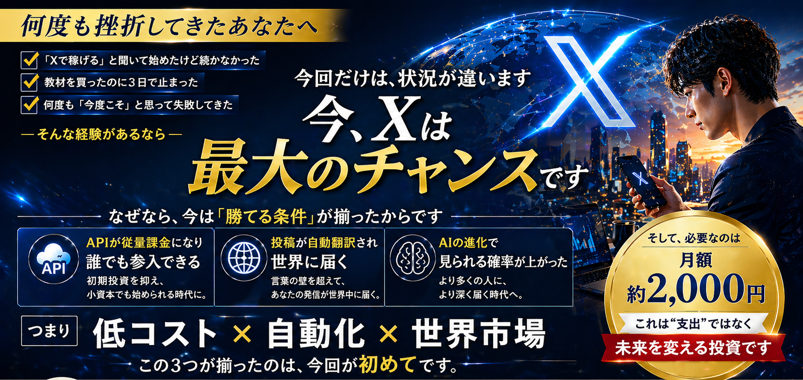
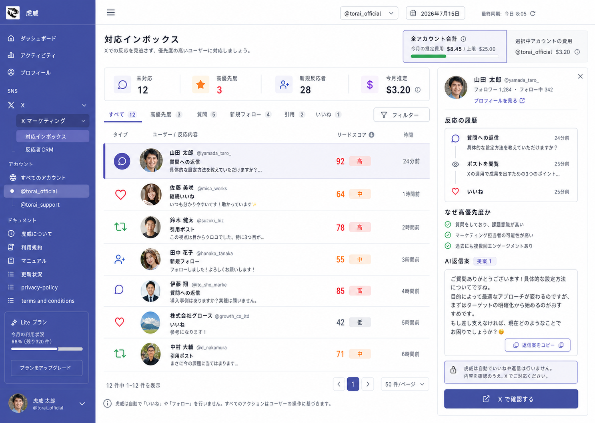
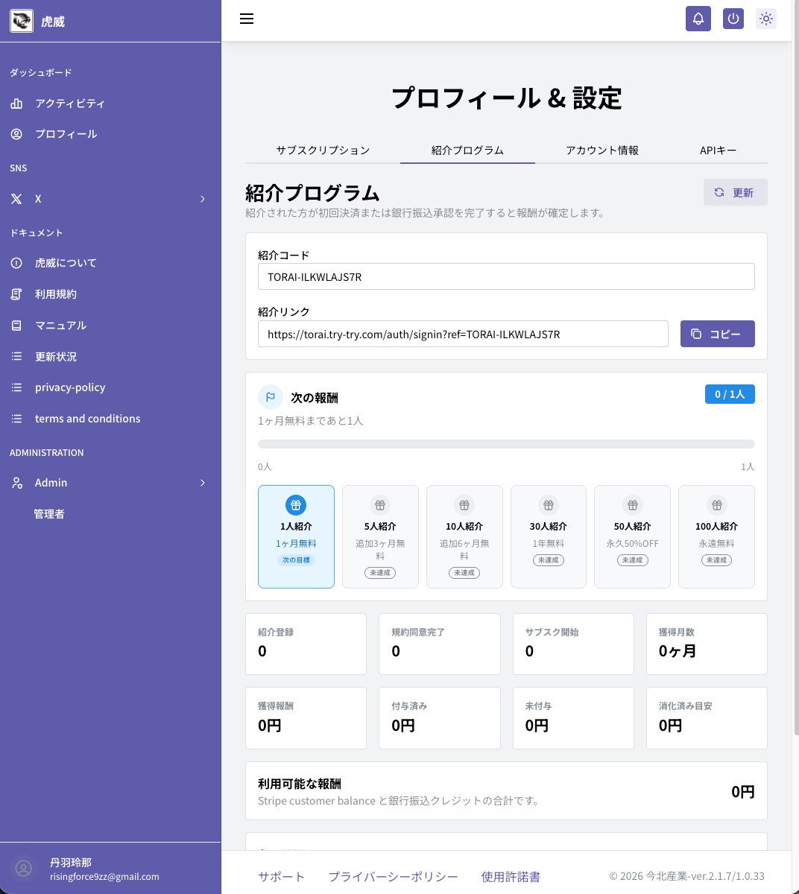

従量課金で小さく開始
X APIは使った分に応じた課金。大きな初期投資を抑えながら、必要な範囲から始められます。
X MARKETING AUTOMATION
AIで投稿案をまとめて作り、自分の言葉に整え、一括予約。さらに投稿データを自動取得・整理し、次の一手を考えやすくします。
無料登録して限定オファーを確認›Googleアカウントで無料登録。初回ログイン後24時間限定のオファーをご案内します。

WHY NOW
少額からAPIを活用でき、言語の壁を越えやすくなり、興味を持つ人へ届く機会が広がっています。
X APIは使った分に応じた課金。大きな初期投資を抑えながら、必要な範囲から始められます。
Xの翻訳機能により、海外のユーザーにも投稿を理解してもらえる可能性が広がります。
推薦技術の進化により、フォロワー以外の関心層へ投稿が届く可能性があります。
※表示・反応・成果を保証するものではありません。API利用料は利用量やXの料金体系により変動します。
THE REAL PROBLEM
原稿作成、予約、結果確認が別々では、改善に使う時間が残りません。
LESS WORK, MORE LEARNING
複数の投稿原稿をまとめて準備。
伝えたい内容と表現を最終調整。
投稿予定を確認しながら一括登録。
自動投稿後、通知で完了を確認。
CREATE & SCHEDULE


BATCH SCHEDULING
投稿準備にかかる時間を減らし、企画・対話・分析に時間を回せる運用を目指します。
DATA-DRIVEN MARKETING
投稿データを自動で取得し、見返しやすい形に整理。反応の良かったテーマや表現を把握し、感覚だけに頼らない改善へつなげます。

HUMAN IN CONTROL
投稿内容は公開前にユーザーが確認・編集し、反応への対応もユーザー自身の判断で行います。規約に配慮しながら、投稿準備とデータ整理を支援します。
START IN 3 STEPS
Googleアカウントでログインします。
ログイン後24時間の内容を確認します。
案内に沿って連携し、運用を始めます。
SIMPLE PRICE
投稿作成・予約・運用支援を低コストで開始。X APIなど外部サービスの利用料は、利用状況に応じて別途必要です。
REFERRAL REWARDS
あなた専用の紹介リンクから登録した方が条件を満たすと、紹介人数に応じた特典が確定します。進捗と報酬は管理画面で確認できます。

FAQ
無料アカウント作成だけではサブスクリプション料金は発生しません。内容と価格を確認したうえで開始できます。
AIは原稿作成を支援しますが、公開前にユーザーが確認・編集します。予約した内容は設定時刻に投稿され、完了を通知で確認できます。
いいえ。虎威は自動で「いいね」や「リポスト」を行いません。反応への対応はユーザー自身が内容を確認して行います。
外部サービスの利用料は含まれません。利用量とX側の料金体系に応じて別途発生します。
YOUR NEXT MOVE
まずは無料で登録し、24時間限定のオファーをご確認ください。
無料登録して特典を受け取る›Googleアカウントが必要です。